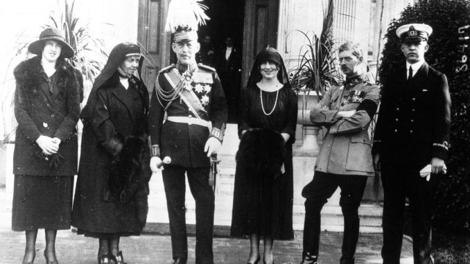

From left to right:
Princess Irene, Queen Sophia, King Constantine I, Crown Princess Helen,
Crown Prince Carol of Romania, and Prince Paul.
Here's a time line of Queen Mother of Romania's life:
1896 - Born in Athens, Kingdom of Greece
1920 - The princess met Carol, Crown Prince of Romania, who quickly asked her hand
in
marriage.
1921 - Despite the bad reputation of the prince, Helen accepted and moved to
Romania,
where she soon gave birth to their only son, Prince Michael.
1925 - Prince Carol abandoned his wife and renounced the throne in order to live
openly
with his mistress.
1927 - Helen was proclaimed "Queen Mother of Romania" as her son Michael
ascended to the throne under the regency of his uncle Prince Nicholas.
1928 - Distraught, Helen tried to persuade her husband to return to her but
eventually
she accepted the divorce.
1932 - After only a month in the country, Carol II imposed a new separation
agreement,
under which Helen was denied the right to return to Romania and the next day, finally
forced her into permanent exile in Italy.
1940 - Back in Romania, Helen found herself, however, subject to
the whim of the dictator, determined to keep the royal family in a purely ceremonial role.
1942 - Helen played a major role in stopping Antonescu from his
plans to deport all of the Jews of the Regat to the German death camp of Bełżec in Poland.
1982 - Helen, queen mother of Romania, died on 28 November 1982, aged
86.
1993 - She was noted for her humanitarian efforts to save Romanian Jews during
World War II, which led to her being awarded by the State of Israel with
the honorific of Righteous Among the Nations.
"M-am gândit adeseori că împrejurările vieții au făcut ca mama să trăiască în felul
unei
făpturi
obișnuite. Dar dacă a trăit astfel, ea nu a încetat niciodată să gândească în felul unei
regine."
-- Michael I of Romania
If you have time and you want to know Queen Mother better, you should
read more
about her on
this
Wikiwand page.